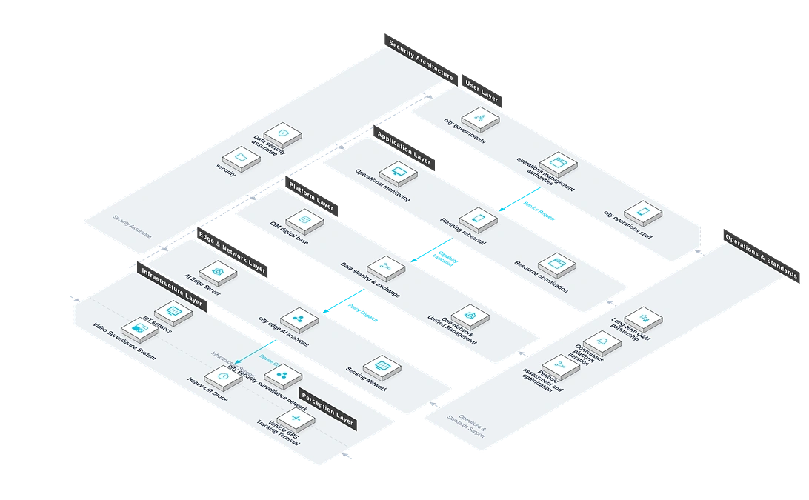

Provides city governments and operations management authorities with city-level intelligent governance solutions built on a CIM+BIM+GIS 3D digital base, addressing severe data silos, unclear operational awareness and suboptimal public resource allocation, and supporting refined governance and sustainable development.
Business Challenges
Severe data silos
Government affairs, traffic, environment and energy data sit in separate departments and cannot be shared.
Unclear operational status
No unified view of city operations; problems are found by experience and handled manually.
Suboptimal public resources
Traffic, energy and public services are allocated without data, mismatching supply and demand.
Business Impact
High planning risk
Major urban projects lack rehearsal and verification, raising construction risk and decision cost.
Delayed decisions inflate governance cost
Siloed data and no unified operating view mean late detection and slow coordination; misallocated public resources and rework costs compound at city scale.
Business Requirements
3D digital base
A CIM+BIM+GIS city information model base is needed.
Multi-source data convergence
Government, IoT and internet data need governance and shared exchange.
Core Capabilities
CIM digital base
CIM+BIM+GIS fused modeling maps the city between physical and virtual spaces.
Data sharing & exchange
Multi-source data converged, governed and shared across departments.
Operational monitoring
AI analytics of city operations with automatic anomaly alerts.
Planning rehearsal
Major plans rehearsed in virtual space to lower construction risk.
Resource optimization
Data-driven matching of traffic, energy and public service supply and demand.
Solution Architecture

Advantages & Delivery
Virtual-Physical Mapping Rehearsal
Plans are rehearsed virtually so risks surface early and decisions are more scientific.
Elastic Tiered Construction
Build from a single block to the whole city at a controllable investment pace.
Data-Driven Decisions
Public resources are allocated on data, reducing supply-demand mismatch.
City-Scale Experience
Active participation in African city digitalization builds city-level delivery expertise.
One-Network Unified Management
City operations on one screen; multi-department dispatch and faster emergency response.
Open Data Sharing
Multi-source data is governed and shared across departments, releasing its value.
Requirement Research
Define governance scenarios, data resources and construction boundaries.
Digital Foundation
Build the CIM+BIM+GIS 3D digital base.
Sensing Network
Deploy IoT sensors, video and environmental monitoring.
Data Platform
Aggregate, govern and share multi-source data.
Smart Applications
Develop monitoring and simulation apps by scenario.
Training & Handover
Train city operations staff before handover.
Client Value
More refined governance, more efficient government services, better public resource allocation, better living quality — driving one-network services and unified city operations.